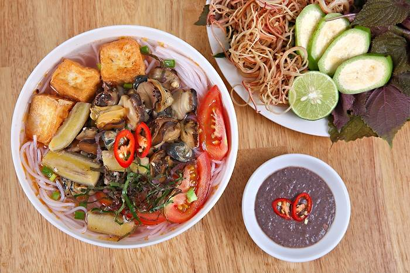
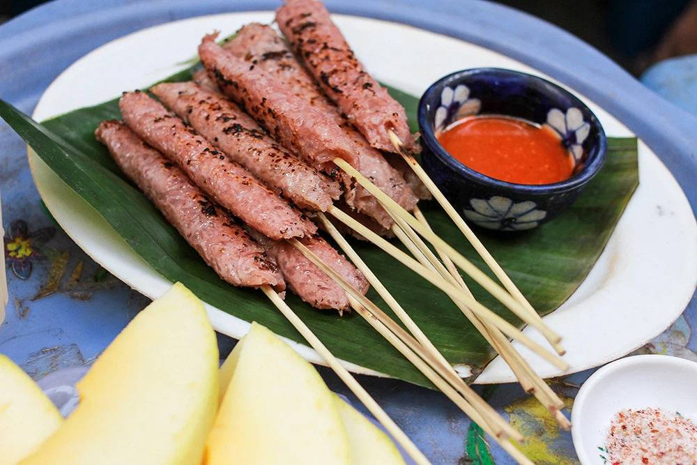

Ẩm thực mùa đông
Bún ốc
Tuy với nguyên liệu đơn giản nhưng để làm ra một món bún ốc thơm ngon trứ danh đặc sản Hà Nội mùa đông thì là cả một nghệ thuật về chế biến. Nước dùng đậm đà xen lẫn vị chua nhẹ của cà chua, thịt ốc giòn dai sần sật tạo nên hương vị đặc trưng của món đặc sản bún ốc Hà Nội. Bún ốc được ăn kèm với hành lá, rau sống và vài lát chanh để tăng thêm độ thanh cho hương vị. Không chỉ là một món ăn truyền thống được ưa thích của nhiều gia đình mà bún ốc còn làm nức lòng bao du khách đến Hà Nội với hương vị dân dã này.
Nem nướng
Đây là những món ăn vặt vô cùng quen thuộc với giới trẻ Hà thành và đặc biệt trở nên thu hút hơn bao giờ hết vào những dịp trời trở lạnh. Từng miếng nem được rán chín vàng, cắt vừa ăn, nóng hổi giòn rụm dùng kèm với tương ớt cay nồng hấp dẫn. Còn nem nướng thì được phết một lớp mật ong và nướng vàng xém vừa tới mang đến hương vị ngòn ngọt, thơm ngon vô cùng. Cùng bạn bè, người thân nhâm nhi vài chiếc nem và chia sẻ những câu chuyện thú vị giúp xua tan đi cái lạnh giá của tiết trời mùa đông.

Bún chả
Bún chả là một món ăn của Việt Nam, bao gồm bún, chả thịt lợn nướng trên than hoa và bát nước mắm chua cay mặn ngọt. Món ăn xuất xứ từ miền Bắc Việt Nam, là thứ quà có sức sống lâu bền nhất của Hà Nội,nên có thể coi đây là một trong những đặc sản đặc trưng của ẩm thực Hà thành. Bún chả có nét tương tự món bún thịt nướng ở miền Trung và miền Nam, nhưng nước mắm pha có vị thanh nhẹ hơn.